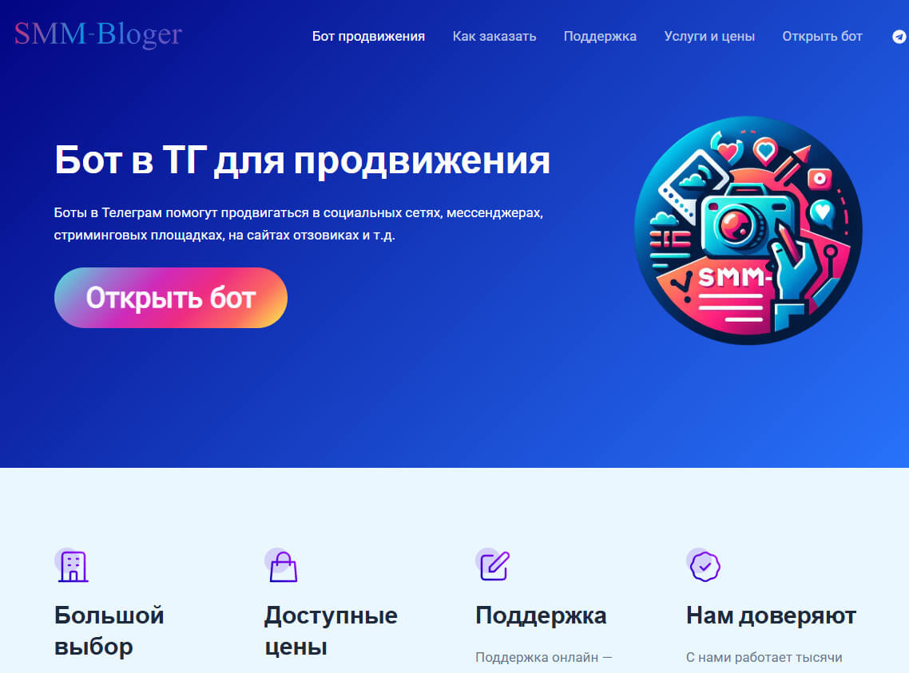
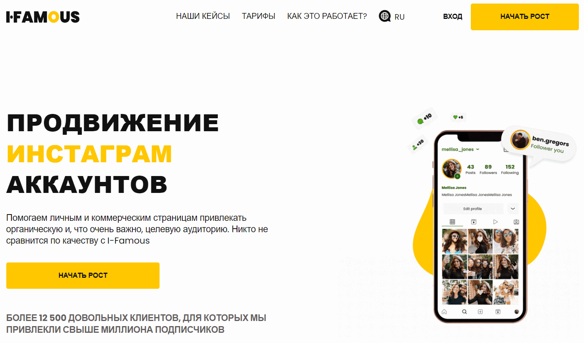
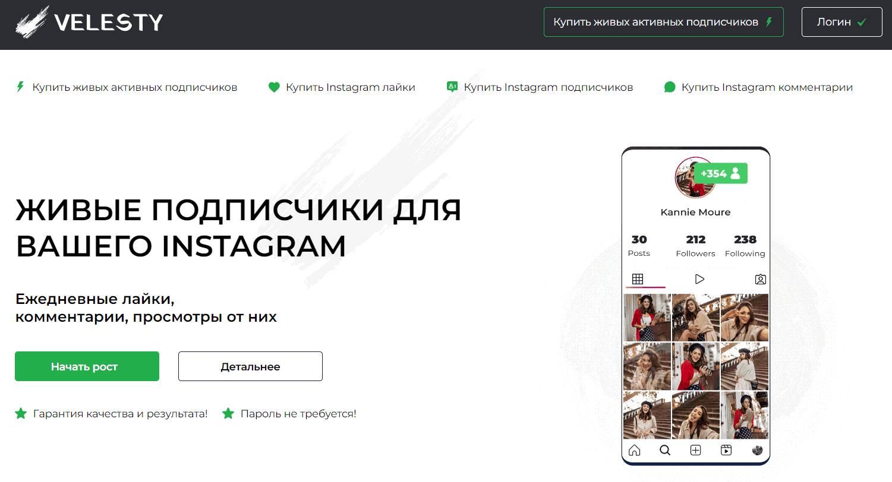
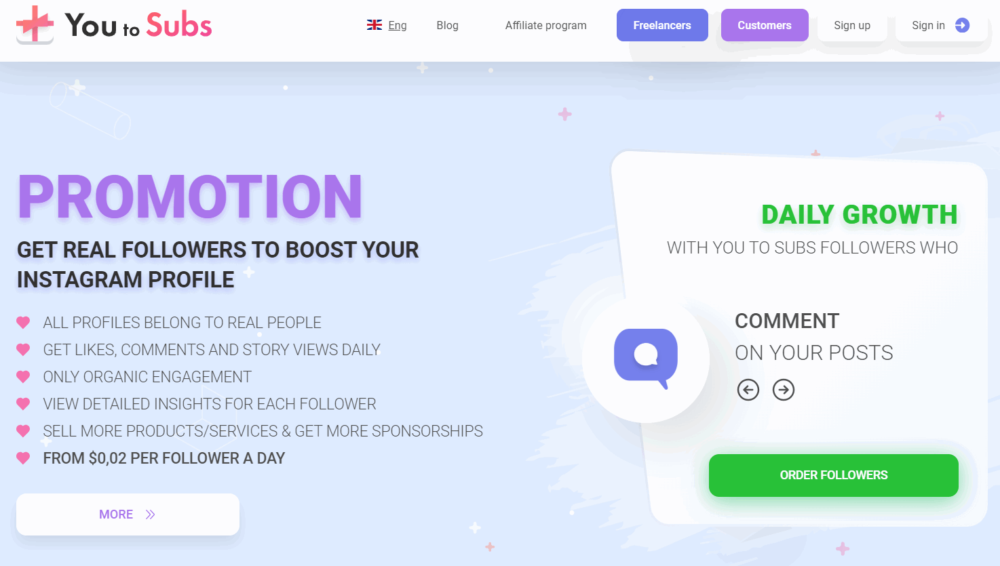
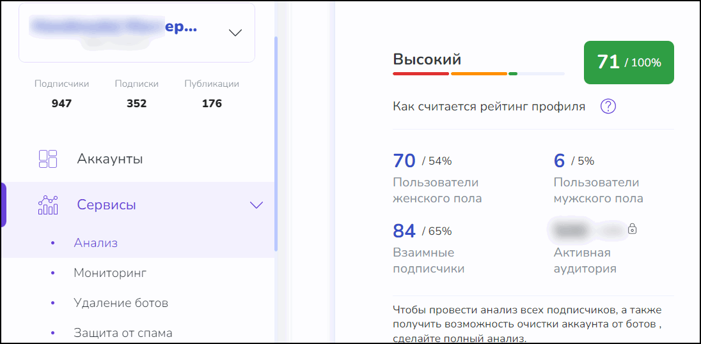

ТОП 5 сервисов по продвижению Инстаграма подписчиками

При желании самостоятельно увеличить число подписчиков на своем аккаунте в Инстаграм* используют сервисы для их накрутки или другие методы продвижения. При этом, чтобы повысить охваты страницы нужны качественные посты, которые будут публиковаться регулярно.
Топ -5 сервисов для продвижения в Инстаграм*
Instagram* может заблокировать профиль, если система увидит подозрительную активность в сообществе или нарушены другие правила соцсети. Важно быть осторожными и при накрутке подписчиков использовать сервисы, имеющие широкий выбор функций. Площадка должна привлекать активных и реальных подписчиков. Ниже рассмотрены ТОП-5 сервисов для накрутки подписчиков в Инстаграм*.
№1 smm-bloger
smm-bloger – это маркетинговое агентство, которое помогает продвижению в Instagram*. Площадка проводит детальный анализ профиля, использует ИИ, что позволяет увеличить аудиторию без фейковых аккаунтов, ботов и спама. Все новые фолловеры – это активные пользователи, которые имеют на своей странице контент и подписчиков.

Особенности сервиса:- проект обеспечивает безопасность при продвижении профиля, за счет постепенного увеличения подписчиков;
- умная стратегия роста способствует повышению охвата и вовлеченности аудитории;
- различные услуги, помимо стандартных опций предлагаются другие инструменты, например, репост или комментирование публикаций;
Предоставляет два варианта тарифа – стартовый и продвинутый. Первый подойдет начинающим пользователям, которым нужно постепенное увеличение аудитории. Второй для тех, кто уже ведет сообщество и желает ускорить процесс, используя продвинутые технологии.
№2 I-famous.biz
I-famous.biz – это платформа для привлечения качественной целевой аудитории. Он отличается своим подходом к таргетированию ЦА, ее поиск выполняется по конкретным параметрам. Проект поможет личным и коммерческим аккаунтам найти подходящую аудиторию без ботов и фейков. Работа безопасна для профиля, так как сервис не запрашивает доступ к нему, не применяет спам рассылки и массфолловинг.

Особенности I-famous.biz:- органическое продвижение. Увеличение реальных подписчиков, которые проявляют активность на странице;
- анализ аккаунта для понимания интересов ЦА, определения возраста, местоположения;
- анализ страниц конкурентов для правильного подбора хэштегов.
I-famous.biz предлагает 3 тарифа - от 19 до 74 долларов, в зависимости от количества подписчиков, комментариев и лайков для новых постов.
№3 Velesty
Velesty – сервис с помощью которого выполняется поиск и привлечение живых подписчиков. Органические методы продвижения помогут найти активных фолловеров, которые будут интересоваться контентом. Платформа не только увеличит количество подписчиков, но и улучшит статистику.

Особенности сервиса:- безопасность – Velesty не требует данных от аккаунта;
- после размещения заказа клиент увидит результат уже в течение нескольких часов;
- предлагает несколько услуг, пользователь может купить лайки от реальных людей, комментарии, прирост живых подписчиков на свою страницу.
Преимущества сервиса в том, что он ориентируется на поиск и привлечение активных фолловеров, а не фейковых профилей.
№4 Youtosubs
С помощью Youtosubs можно увеличить число реальных подписчиков в своем профиле. Это будут активные пользователи, которые будут ставить лайки, оставлять комментарии и просматривать публикации. Площадка не является программой для накрутки ботов, ведь за автоматические действия и повышенную активность Инстаграм* может заблокировать аккаунт. Привлечение фолловеров происходит поэтапно, что позволяет снизить риск попасть в бан.

Особенности Youtosubs:- анализ страницы, определяется местоположение, язык и другие критерии;
- органическое продвижение;
- индивидуальный подход с учетом цели увеличения подписчиков.
Платформа имеет своих исполнителей, которые увидят заказ и выполнят его с учетом всех требований.
№5 Instahero
Instahero проведет глубокий анализ фолловеров в Инстаграм* и почистит аккаунт от ботов. Поможет найти неактивные страницы и избавится от них, это повысит качество и вовлеченность подписчиков.

Особенности площадки:- аналитика фолловеров. Возраст, пол, географическое положение, бизнес-акаунты и взаимные подписки;
- рейтинг страницы. Используется инструмент, который показывает, что необходимо изменить для повышения эффективности сообщества;
- фильтрация. По заданным параметрам помогает выявить тех, кто оставляет ненормативную лексику, контакты других страниц, не имеет аватарки;
- защищает от спама и блокирует некоторые комментарии.
В instahero можно бесплатно сделать анализ аккаунта, который определит, что мешает увеличивать охваты.
Другие способы накрутки подписчиков в Инстаграм* без использования сервисов
Существуют другие варианты накрутки подписчиков:
- продвижение через другие площадки. Нужно добавить ссылку на страницу в других соцсетях. Например, это может быть в описании под видео на YouTube, в публикациях в одноклассниках или ВК;
- розыгрыши и конкурсы. Предлагается выигравшим пользователям приз, который их точно заинтересует. Чтобы после завершения конкурса не было отписок лучше искать свою ЦА;
- коллаборация или взаимный пиар. Владельцы страниц договариваются о том, что будут взаимно рекламировать друг друга на бесплатной основе. Это могут быть совместный эфиры, упоминание ссылки в публикации или в сторис через функцию «Упоминание»;
- хэштеги. Сейчас уже не имеют такой значимости в продвижении, но не стоит полностью их игнорировать. Лучше выбирать среднечастотные и низкочастотные, найти их можно в боте SelfSMMBot;
- reels. Публикации в виде вертикальных видео, продолжительность которых не больше минуты. Для нового формата публикаций соцсеть дает больше охватов.
Необходимо использовать разные способы увеличения аудитории. Продвижение не должно быть, например, только при помощи розыгрышей или хэштегов.
Рекомендации для эффективного продвижения в Инстаграм*
Для эффективного продвижения аккаунта в Инстаграм* поможет соблюдение некоторых советов. Например, перед накруткой подписчиков важно подготовить свое сообщество. Нужно создать качественный и полезный контент, он должен быть интересным, тогда пользователи не будут массово отписываться. Другие рекомендации:
- лучше определиться с целью создания профиля в соцсети, что хочется донести до аудитории. Это поможет понять, какой стиль контента нужен, чтобы привлечь нужную аудиторию;
- добавить главную фотографию в аккаунт, заполнить биографию, если есть сайт указать ссылку на него или на свою программу;
- при добавлении изображений в публикации лучше применять фотошоп, чтобы они были качественными;
- не стоит сразу активно работать по накрутке подписчиков, их не должно быть слишком много за короткий период времени, лучше заказывать небольшой объем;
- использовать инструменты для отслеживания аналитики и эффективности продвижения сообщества. Тестировать варианты накрутки;
- должна быть коммуникация с аудиторией для укрепления связей, необходимо отвечать на комментарии;
- лучше регулярно публиковать посты – это поможет улучшить вовлеченность пользователей;
- правильный подбор хэштегов, которые помогут найти целевую аудиторию.
При накрутке подписчиков в Инстаграм* не стоит забывать, что покупка аккаунтов или ботов может привести к блокировке сообщества. Поэтому лучше воспользоваться сервисами, которые привлекут в профиль реальных пользователей.